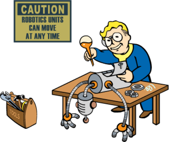

Terminator¶
{kind=link}
Marian lubi state filmy, uważa, że już nikt nie robi porządnych film. A aktualna młodzież… Nie wie też czemu jest takie zainteresowanie AI, chyba każdy wie, czym jest (będzie) skynet… W obawie przed skynetem korzystał z terminator, ale ostatnio przerzucił się na tmux+tmuxinator.
Rola: Terminal¶
roles/
terminal/
tasks/
main.yml
files/
tmux.config
File¶
## MY CHANGE
#add prefix combination crtl+a
set -g prefix2 C-a
bind C-a send-prefix -2
# split panes using | and -
bind | split-window -h
bind - split-window -v
#witch panes using Alt-arrow without prefix
bind -n M-Left select-pane -L
bind -n M-Right select-pane -R
bind -n M-Up select-pane -U
bind -n M-Down select-pane -D
# Switch windows
# usage: "SHIFT+arrow" (without prefix key)
bind -n S-Left previous-window
bind -n S-Right next-window
# Enable mouse control (clickable windows, panes, resizable panes)
set -g mouse on
######################
### DESIGN CHANGES ###
######################
# panes
set -g pane-border-fg black
set -g pane-active-border-fg brightred
## Status bar design
# status line
set -g status-utf8 on
set -g status-justify left
set -g status-bg default
set -g status-fg colour12
set -g status-interval 2
# messaging
set -g message-fg black
set -g message-bg yellow
set -g message-command-fg blue
set -g message-command-bg black
#window mode
setw -g mode-bg colour6
setw -g mode-fg colour0
# window status
setw -g window-status-format " #F#I:#W#F "
setw -g window-status-current-format " #F#I:#W#F "
setw -g window-status-format "#[fg=magenta]#[bg=black] #I #[bg=cyan]#[fg=colour8] #W "
setw -g window-status-current-format "#[bg=brightmagenta]#[fg=colour8] #I #[fg=colour8]#[bg=colour14] #W "
setw -g window-status-current-bg colour0
setw -g window-status-current-fg colour11
setw -g window-status-current-attr dim
setw -g window-status-bg green
setw -g window-status-fg black
setw -g window-status-attr reverse
# Info on left (I don't have a session display for now)
set -g status-left ''
# loud or quiet?
set-option -g visual-activity off
set-option -g visual-bell off
set-option -g visual-silence off
set-window-option -g monitor-activity off
set-option -g bell-action none
set -g default-terminal "screen-256color"
# The modes {
setw -g clock-mode-colour colour135
setw -g mode-attr bold
setw -g mode-fg colour196
setw -g mode-bg colour238
# }
# The panes {
set -g pane-border-bg colour235
set -g pane-border-fg colour238
set -g pane-active-border-bg colour236
set -g pane-active-border-fg colour51
# }
# The statusbar {
set -g status-position bottom
set -g status-bg colour234
set -g status-fg colour137
set -g status-attr dim
set -g status-left ''
set -g status-right '#[fg=colour233,bg=colour241,bold] %d/%m #[fg=colour233,bg=colour245,bold] %H:%M:%S '
set -g status-right-length 50
set -g status-left-length 20
setw -g window-status-current-fg colour81
setw -g window-status-current-bg colour238
setw -g window-status-current-attr bold
setw -g window-status-current-format ' #I#[fg=colour250]:#[fg=colour255]#W#[fg=colour50]#F '
setw -g window-status-fg colour138
setw -g window-status-bg colour235
setw -g window-status-attr none
setw -g window-status-format ' #I#[fg=colour237]:#[fg=colour250]#W#[fg=colour244]#F '
setw -g window-status-bell-attr bold
setw -g window-status-bell-fg colour255
setw -g window-status-bell-bg colour1
# }
# The messages {
set -g message-attr bold
set -g message-fg colour232
set -g message-bg colour166
# }
# use a large scrollback history
set-option -g history-limit 10000
# bind key for synchronizing panes
bind-key y set-window-option synchronize-panes
# List of plugins
set -g @plugin 'tmux-plugins/tpm'
set -g @plugin 'tmux-plugins/tmux-sensible'
set -g @plugin 'tmux-plugins/tmux-resurrect'
set -g @plugin 'tmux-plugins/tmux-continuum'
#OTHER OPTION
# for vim
set -g @resurrect-strategy-vim 'session'
#set -g @resurrect-save-bash-history 'on'
# Other examples:
# set -g @plugin 'github_username/plugin_name'
# set -g @plugin 'git@github.com/user/plugin'
# set -g @plugin 'git@bitbucket.com/user/plugin'
# Initialize TMUX plugin manager (keep this line at the very bottom of tmux.conf)
run '~/.tmux/plugins/tpm/tpm'
Tasks¶
- name: apt terminal packates
apt:
name: "{{ item }}"
state: present
with_items:
- tmux
- tmuxinator
- name: add tmux config
copy:
src: tmux.config
dest: '{{ user_config }}/.tmux.conf'
- name: Create symbolic link
file:
src: '{{ user_config }}/.tmux.conf'
dest: '{{ home_path }}/.tmux.conf'
state: link
force: yes
Output¶
$ ansible-playbook playbooks/terminal.yml
PLAY [install and config terminal] *************************************************************************************************************************************************************************
TASK [Gathering Facts] *************************************************************************************************************************************************************************************
ok: [localhost]
TASK [terminal : apt terminal packates] ********************************************************************************************************************************************************************
changed: [localhost] => (item=[u'tmux', u'tmuxinator'])
TASK [terminal : add tmux config] **************************************************************************************************************************************************************************
changed: [localhost]
TASK [terminal : Create symbolic link] *********************************************************************************************************************************************************************
ok: [localhost]
PLAY RECAP *************************************************************************************************************************************************************************************************
localhost : ok=4 changed=2 unreachable=0 failed=0
Note
File pozwala na kopiowanie plików w dowolne miejsce, między innymi konfigów. file